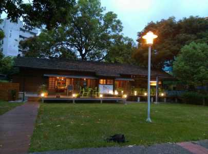

關於雲林
INTRODUCE
雲林，橫跨濁水溪有著顯眼的紅色西螺大橋、充滿童年回憶及好玩遊樂設施的劍湖山世界、美味道地的鴨肉羹、電視節目大推的千巧古蛋糕……當然，最近新起的高鐵雲林站，讓歸鄉的遊子及想來這裡發現雲林之美的遊客們都更加方便！
私房雲林
SECRET
石龜花海
凹凸cafe

虎尾鐵橋
旅人洋行 Tea Box
同心公園
雲林小故事
HISTORY

雲林演變史
超越40年前歷史的西螺大橋，跨越了濁水溪，曾有遠東第一大橋之稱，後來曾因老舊而被提議拆除，但經過雲林縣和彰化縣政府的努力下，現已轉型為觀光大橋。
但20年前，雲林六輕工業區開始營運，為台灣帶來了極大的經濟效應，但令人遺憾的是卻也造成了許多汙染，甚至為當地雲林人的生活帶來了許多困擾。
如今高鐵雲林站也開通了，讓許多歸鄉的遊子或是來觀光的旅客都更加方便，也為雲林增添了一番新風貌。


聯絡我們
CONTACT


※頁面上些許照片取自google，如有版權問題歡迎隨時聯絡，必定盡力配合，感謝。
© Copyright c-week.elebymax.net 2016